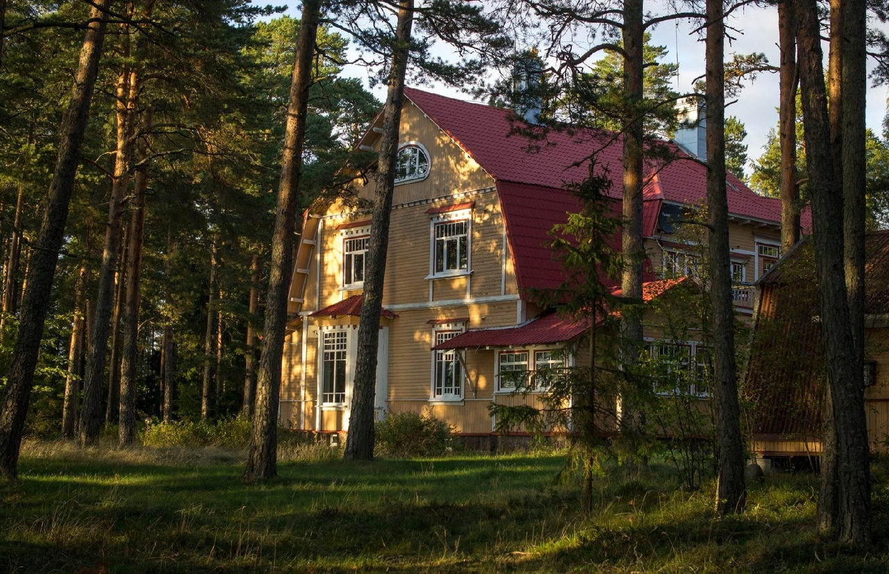

"Стакан"
Круглый причал, построенный в 1959г. для испытаний атомного ледокола "Ленин". Здесь проходили и проходят испытания и другие известные суда: океанское спасательное судно "Памир", первая туристическая подводная лодка "Садко", судно ледового класса "Всеволод Бобров". В остальное время со Стакана рыбачат и ныряют.
Координаты: 60.40306, 28.577015
Пройти сюда можно либо из базы "Манола" либо по берегу

"История"
В Приморске на пляже Плитка, неделеко от остова морского санатория находится еще один интересный комплекс исторических зданий - дача Мюзера. В описании к ней в финской книге Койвисто не указано ничего о ее хозяине, кроме фамилии. Там сказано: Летняя вилла Мюзера. Смотритель Науккаринен Тойво, жена и дети: Олли, Гретель, Хеллин и Ээро. Истории наших мест известно одно семейство Мюзер. Они жили в Петербурге, владели семейной фирмой и у них была дача в Терийоках (Зеленогорск). Генрих Мюзер увлекался яхтенным спортом. Возможно, это их вторая дача?
По информации нашего краеведческого музея, в июне 1944 г. здесь находился штаб 260й бригады морской пехоты КБФ. После войны в 1947 г. - разместилась Приморская больница на 75 мест с хирургическим и родильным отделением и работала там до 1972 г. Кто-то помнит как это было?
Сейчас здесь располагается база отдыха Метростроя, о зданиях хорошо заботятся, территория закрыта, но забор не мешает обзору, все хорошо видно.
Основное здание имеет интересную архитектуру. Оно напоминает дачи Северного модерна, расположенные на берегу Финского залива в Курортном районе. На территории Койвисто в этом стиле творили разные архитекторы.
